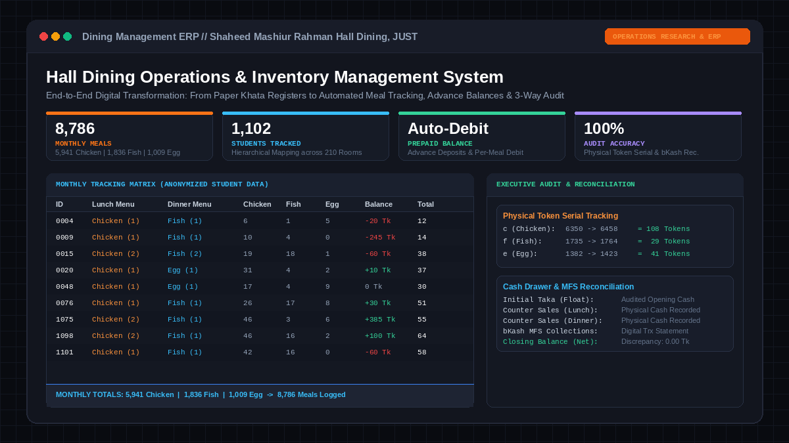

Hall Dining Operations & Inventory Management System
A real-world operational ERP engineered during tenure as Dining Manager at Shaheed Mashiur Rahman Hall, Jashore University of Science and Technology (JUST). Digitized a legacy, error-prone manual ledger into an automated cloud database tracking ~9,000 monthly meals across 1,100+ residents, featuring daily kitchen protein forecasting, physical token serial audits, and digital bKash financial reconciliation.
5,941 Chicken, 1,836 Fish, and 1,009 Egg meals logged with zero discrepancies.
Structured across 210 residential hall rooms with anonymized student records.
Daily aggregated protein requirements provided to cooks for accurate procurement.
Reconciled counter cash, bKash MFS statements, and physical token serial batches.
Dual-Slot Matrix & Executive Operations Dashboard

Figure 1: High-level overview of the dual-slot monthly meal matrix (left) and the executive audit & reconciliation dashboard (right).
The Operational Challenge
University residential hall dining facilities in Bangladesh traditionally operate on manual, handwritten registers ("khata"). Managing a dining hall serving 200–400+ meals per session for over 1,100 students across 210 residential rooms under paper ledgers generated chronic systemic issues:
- Tally & Calculation Errors: Daily meal tallies and individual billing balances were computed manually at month-end, resulting in accounting disputes, miscalculated dues, and delayed vendor payments.
- Food Wastage & Inaccurate Procurement: Kitchen cooks had no real-time forecasting of how many students would choose chicken vs. fish vs. egg on a given day. This caused either food shortages or severe perishables spoilage.
- Token Leakage & Audit Blindspots: Without strict serial number reconciliation between physical tokens issued at counters and kitchen distribution, tokens were vulnerable to reuse, unauthorized duplication, or unaccounted sales.
- Hybrid Payment Chaos: Balancing physical counter cash collections alongside digital Mobile Financial Services (bKash) led to unverified ledger discrepancies.
System Architecture & Relational Matrix
To eliminate manual bottlenecks, a relational spreadsheet ERP architecture was engineered from scratch. The system was structured into two synchronized operational tiers:
1. Dual-Slot Monthly Tracking Matrix
Organized into 1,102 student rows mapped sequentially by Hall Room number. For each of the 31 calendar days, the matrix splits into dedicated Lunch and Dinner columns with active protein tracking:
2. Live Kitchen Demand & Procurement Engine
Dynamic aggregation formulas at the base of every day compute total requirements across protein types (e.g. 242 Chicken, 20 Egg, 62 Fish). Cooks and grocery buyers received exact morning figures, cutting perishables spoilage by aligning procurement directly with consumption demand.
Fraud Prevention & 3-Way Audit Protocol
A key innovation of the system was embedding a strict executive audit workflow to eliminate leakage and ensure that physical inventory, digital logs, and financial balances matched perfectly at the close of every shift:
Token Serial Range Tracking
Tokens were issued in serialized batches (c for Chicken, f for Fish, e for Egg). Counter managers logged initial and final token numbers. The delta (Final - Initial) had to equal the exact counter meals recorded.
Cash Drawer & bKash Reconciliation
Opening cash float (Initial Taka) was reconciled with lunch and dinner physical revenue, digital bKash MFS transaction statements, and petty expenses (Extra), achieving 100% financial balancing with zero unexplained loss.
Operational Impact & Results
Eliminated billing disputes through instant student ID lookup.
Physical serial verification prevented fraudulent token reuse.
Scaled flawlessly without manual record bookkeeping overhead.